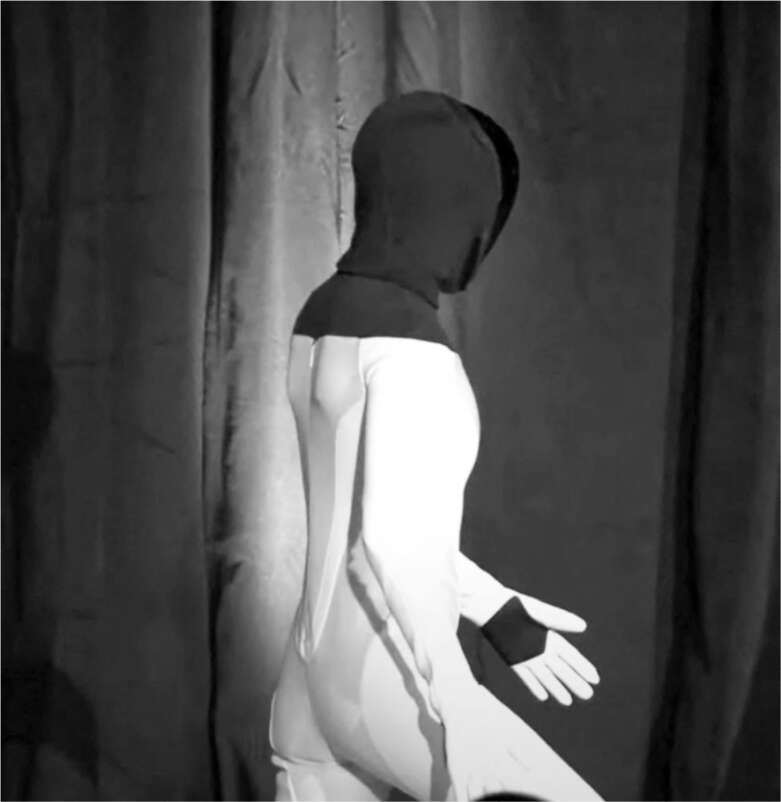

Robot thân thiện
Mối quan tâm của Musk trong việc tạo ra một robot hình người bắt nguồn từ niềm đam mê và nỗi sợ hãi mà ông cảm thấy về trí tuệ nhân tạo. Khả năng ai đó có thể tạo ra, dù cố ý hay vô tình, một AI có thể gây hại cho con người đã khiến ông ấy thành lập OpenAI vào năm 2014. Nó cũng dẫn ông ấy đến việc thúc đẩy các nỗ lực liên quan, bao gồm ô tô tự lái, một siêu máy tính huấn luyện mạng nơ-ron được gọi là Dojo và chip Neuralink có thể được cấy vào não để tạo ra mối quan hệ cộng sinh rất mật thiết giữa con người và máy móc.
Mục tiêu tối thượng của AI an toàn, đặc biệt đối với người đam mê khoa học viễn tưởng từ nhỏ như, chính là tạo ra một robot hình người, có khả năng xử lý thông tin hình ảnh và học cách thực hiện nhiệm vụ mà không vi phạm luật của Asimov: robot không được làm hại loài người hay bất kỳ con người nào. Trong khi OpenAI và Google tập trung vào chatbot văn bản, Musk lại quyết định chú trọng vào hệ thống trí tuệ nhân tạo hoạt động trong thế giới thực, chẳng hạn như robot và ô tô. "Nếu có thể tạo ra xe tự lái, vốn là robot trên bánh xe, thì cũng có thể chế tạo robot biết đi", Musk nói.
Đầu năm 2021, Musk bắt đầu đề cập trong các cuộc họp điều hành rằng Tesla nên nghiêm túc xem xét việc chế tạo robot. Ông còn cho họ xem một video về những robot ấn tượng mà Boston Dynamics đang thiết kế. "Robot hình người sẽ xuất hiện, dù muốn hay không", ông nói, "và chúng ta nên tham gia để định hướng nó theo hướng tích cực". Càng nói về điều này, ông càng hào hứng. "Đây có tiềm năng trở thành dự án lớn nhất từ trước đến nay, thậm chí còn lớn hơn cả xe tự lái", ông nói với giám đốc thiết kế Franz von Holzhausen.
"Một khi nghe Elon nhắc đi nhắc lại một chủ đề, chúng tôi sẽ bắt đầu thực hiện", von Holzhausen chia sẻ. Họ bắt đầu họp tại studio thiết kế của Tesla ở Los Angeles, nơi trưng bày các mẫu Cybertruck và Robotaxi. Musk đưa ra thông số kỹ thuật: robot cao khoảng 1,7m, có ngoại hình trung tính và hơi giống yêu tinh để "không tạo cảm giác có thể hoặc muốn làm hại bạn". Optimus, robot hình người do đội ngũ xe tự lái của Tesla chế tạo, ra đời như vậy. Musk quyết định công bố dự án này tại sự kiện "AI Day", được lên kế hoạch tổ chức tại trụ sở Palo Alto của Tesla vào ngày 19 tháng 8 năm 2021.
AI Day
Hai ngày trước AI Day, Musk tổ chức một cuộc họp chuẩn bị trực tuyến với đội ngũ Tesla từ Boca Chica. Trong ngày hôm đó, ông còn họp với Văn phòng Bảo tồn Cá và Động vật hoang dã Texas để xin hỗ trợ cho việc phóng Starship, họp tài chính của Tesla, thảo luận về tài chính mái nhà năng lượng mặt trời, họp về các vụ phóng dân sự trong tương lai, đi kiểm tra các lều lắp ráp Starship, phỏng vấn cho phim tài liệu của Netflix và đến thăm những ngôi nhà mà đội của Brian Dow đang lắp đặt mái nhà năng lượng mặt trời lần thứ hai vào đêm khuya. Sau nửa đêm, ông lên máy bay đến Palo Alto.
"Việc phải chuyển đổi giữa nhiều vấn đề như vậy thật mệt mỏi", ông nói khi cuối cùng cũng được thư giãn trên máy bay. "Nhưng có rất nhiều vấn đề, và tôi phải giải quyết chúng". Vậy tại sao ông lại nhảy vào lĩnh vực AI và robot? "Vì tôi lo lắng về Larry Page", ông nói. "Tôi đã nói chuyện rất lâu với anh ấy về những nguy hiểm của AI, nhưng anh ấy không hiểu. Giờ chúng tôi hầu như không nói chuyện".
Khi hạ cánh lúc 4 giờ sáng, ông đến nhà một người bạn ngủ vài tiếng, sau đó đến trụ sở Palo Alto của Tesla để gặp nhóm chuẩn bị cho buổi công bố robot. Kế hoạch là để một nữ diễn viên mặc trang phục robot và lên sân khấu. Musk tỏ ra hào hứng. "Cô ấy sẽ làm xiếc!", ông tuyên bố, như trong một tiểu phẩm Monty Python. "Chúng ta có thể làm cho cô ấy thực hiện những điều thú vị trông có vẻ bất khả thi không? Ví dụ như nhảy tap với mũ và gậy?".
Ông có một quan điểm nghiêm túc: robot nên trông vui vẻ chứ không đáng sợ. Như được lập trình sẵn, X bắt đầu nhảy trên bàn phòng họp. "Đứa trẻ có bộ pin rất tốt", cha cậu bé nói. "Nó cập nhật phần mềm bằng cách đi lại, quan sát và lắng nghe". Đó là mục tiêu: một robot có thể học cách thực hiện nhiệm vụ bằng cách quan sát và bắt chước con người.
Sau vài câu nói đùa về điệu nhảy mũ và gậy, Musk bắt đầu đi sâu vào các thông số kỹ thuật cuối cùng. "Hãy làm cho nó di chuyển với tốc độ 8km/h, chứ không phải 6km/h, và tăng khả năng nâng vật nặng hơn một chút," ông nói. "Chúng ta đã quá tập trung vào việc làm cho nó trông nhẹ nhàng." Khi các kỹ sư cho biết họ đang lên kế hoạch thay pin khi hết, Musk đã bác bỏ ý tưởng đó. "Nhiều kẻ ngốc đã đi theo con đường pin có thể thay thế, và thường là do họ có pin kém chất lượng," ông nói. "Ban đầu Tesla cũng đã đi theo con đường đó. Không cần pin thay thế. Chỉ cần làm cho bộ pin lớn hơn để nó có thể hoạt động mười sáu giờ."
Sau cuộc họp, ông ở lại trong phòng hội nghị. Cổ ông bị đau do tai nạn đấu vật Sumo trước đây, và ông nằm trên sàn với một túi đá chườm sau đầu. "Nếu chúng ta có thể sản xuất một robot đa năng có thể quan sát bạn và học cách thực hiện một nhiệm vụ, điều đó sẽ thúc đẩy nền kinh tế đến một mức độ điên rồ," ông nói. "Khi đó, chúng ta có thể muốn thiết lập thu nhập cơ bản toàn cầu. Làm việc có thể trở thành một sự lựa chọn." Vâng, và một số người vẫn sẽ bị thôi thúc một cách điên cuồng để làm điều đó.
Musk có tâm trạng cáu kỉnh trong buổi diễn tập thuyết trình cho Ngày AI vào hôm sau, không chỉ giới thiệu Optimus mà còn cả những tiến bộ mà Tesla đang thực hiện trong lĩnh vực xe tự lái. "Thật nhàm chán," ông liên tục nói khi Milan Kovac, một kỹ sư người Bỉ nhạy cảm, người điều hành các nhóm phần mềm Autopilot và Optimus, trình bày các slide rất kỹ thuật. "Có quá nhiều thứ ở đây không hấp dẫn. Đây là một sự kiện tuyển dụng, và sẽ không ai muốn tham gia sau khi xem những slide chết tiệt này."
Kovac, người chưa thành thạo nghệ thuật làm chệch hướng những lời chỉ trích của Musk, quay trở lại văn phòng và nghỉ việc, khiến kế hoạch cho buổi thuyết trình tối hôm đó trở nên hỗn loạn. Lars Moravy và Pete Bannon, những người giám sát dày dạn kinh nghiệm hơn của anh, đã chặn anh lại khi anh chuẩn bị rời khỏi tòa nhà. "Hãy xem qua các slide của anh và xem chúng ta có thể khắc phục điều này như thế nào," Moravy nói. Kovac đề cập rằng anh ấy có thể uống một chút rượu whisky, và Bannon đã tìm thấy ai đó trong xưởng Autopilot có một ít. Họ uống hai ly, và Kovac bình tĩnh lại. "Tôi sẽ vượt qua sự kiện này," anh hứa với họ. "Tôi sẽ không để đội của tôi thất vọng."
Với sự giúp đỡ của Moravy và Bannon, Kovac đã cắt giảm một nửa số slide của mình và tập lại một bài phát biểu mới. "Tôi đã kìm nén cơn giận của mình và mang những slide mới đến cho Elon," anh nói. Musk liếc nhìn chúng và nói, "Ừ, chắc chắn rồi. Được rồi." Kovac có cảm giác rằng Musk thậm chí không nhớ đã mắng anh.
Sự gián đoạn khiến buổi thuyết trình tối hôm đó bị trì hoãn một giờ. Đó không phải là một sự kiện được trau chuốt lắm. Mười sáu người thuyết trình đều là nam giới. Người phụ nữ duy nhất là nữ diễn viên đóng giả robot, và cô ấy không thực hiện bất kỳ màn nhảy múa mũ và gậy nào thú vị. Không có màn nhào lộn nào. Nhưng với giọng đều đều hơi lắp bắp, Musk đã có thể kết nối Optimus với kế hoạch xe tự lái và siêu máy tính Dojo của Tesla. Ông nói, Optimus sẽ học cách thực hiện các nhiệm vụ mà không cần hướng dẫn từng dòng. Giống như con người, nó sẽ tự học bằng cách quan sát. Điều đó sẽ không chỉ thay đổi nền kinh tế của chúng ta, ông nói, mà còn cả cách chúng ta sống.

Một nữ diễn viên mặc trang phục robot Optimus được đề xuất